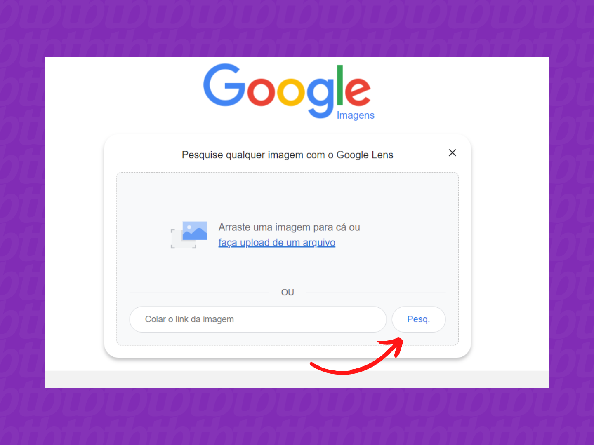

serviços como o Google Imagens e o TinEye podem te ajudar a encontrar uma pessoa pela foto com métodos de pesquisa reversa

Introdução: A pesquisa reversa permite que, a partir de um único arquivo enviado, os sistemas identifiquem imagens semelhantes e apresente-as como resultado para o usuário que está buscando. Por isso, em poucos cliques, dá para encontrar uma pessoa só pela foto. Mas, atenção, é mais difícil achar o outro se ele não tiver fotos públicas em redes sociais como o Twitter, Facebook, Flickr, LinkedIn.
Escolha a forma de envio — é possível colar a URL de uma imagem ou selecionar um arquivo armazenado no computador; optando pelo segundo método, clique em “Envie uma imagem” e depois em “Escolher arquivo”; 